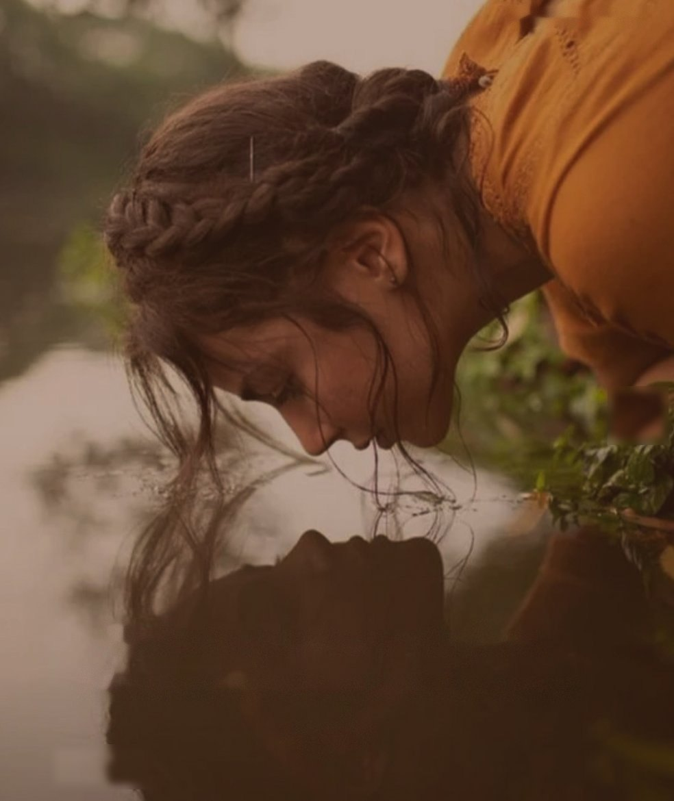
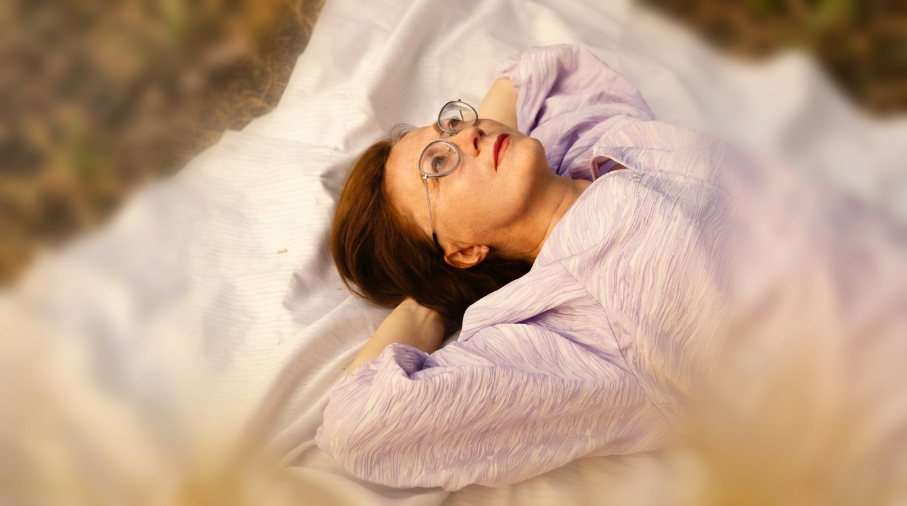
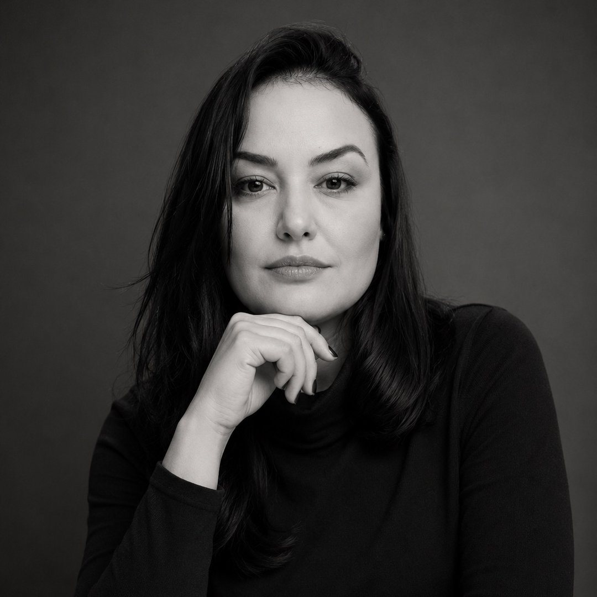
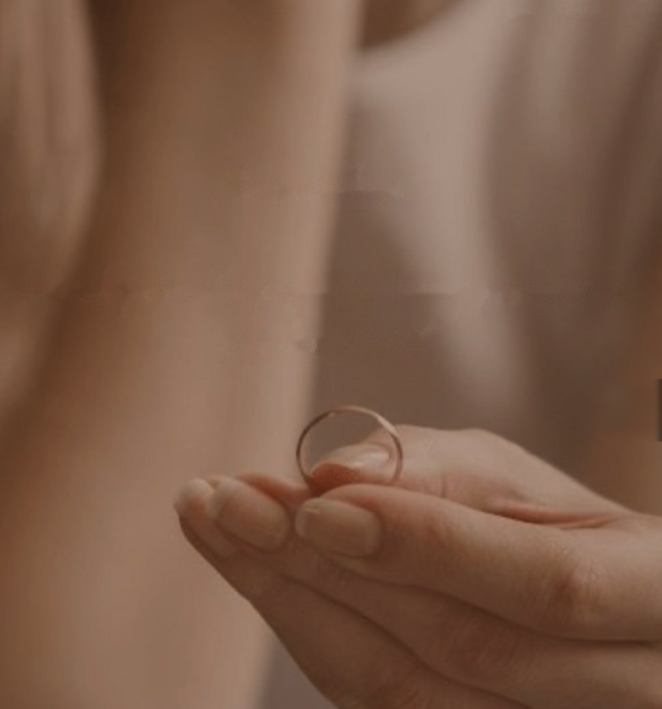
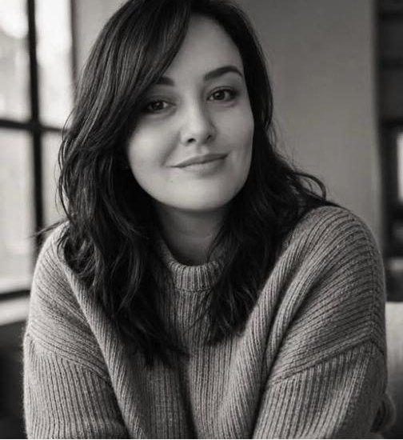
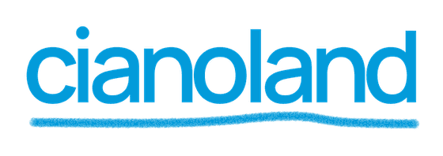

Sobrecarga e autocobrança
Para quem aprendeu a ser forte o tempo inteiro e já não lembra a última vez que descansou de verdade.

Psicanálise online para mulheres que vivem no automático e se cobram o tempo inteiro.
Agendar a primeira conversa“Me senti super acolhida e já consigo sentir os resultados dos nossos encontros.”
“Hoje consegui ter a tal conversa com a minha mãe, e me sinto livre!”
“Está sendo uma das melhores experiências de 2026! Estou me redescobrindo.”
Às vezes, o que você precisa não é de alguém que te diga o que fazer. É de um espaço onde possa falar, ser escutada e, a partir disso, começar a enxergar o que antes parecia impossível de organizar.

Psicanalista
Sou mãe, esposa, filha e a mulher que já precisou recomeçar. Antes da psicanálise, tive uma carreira numa área completamente diferente e uma vida que, por fora, parecia estar no lugar.
Foi olhando para a minha própria história que a psicanálise entrou na minha vida. Hoje faço desse olhar o meu trabalho: oferecer um espaço para você falar, pensar, questionar e construir novas possibilidades para a própria história.
Quero agendar
Para quem aprendeu a ser forte o tempo inteiro e já não lembra a última vez que descansou de verdade.

Para olhar o que se repete nas relações, sustentar o que você sente e deseja, mesmo diante do outro.
Para quem vive para os outros e quer descobrir onde ficou de si mesma, sem culpa por isso.
“Desde que começamos as sessões me senti super acolhida e já consigo sentir os resultados dos nossos encontros.”
“Já tinha passado por outros profissionais e posso hoje dizer com toda clareza que indicaria seu trabalho a alguém que eu queira ver bem.”
“Está sendo uma das melhores experiências de 2026! Estou me redescobrindo! Me enxergando!”
“Hoje consegui ter a tal conversa com a minha mãe, e me sinto livre!”
“Atendimento excelente mesmo antes da primeira sessão, ao tirar todas as dúvidas que eu tinha, sempre com explicação detalhada e muita paciência.”
“Esse processo está sendo leve. Estou muito feliz em poder receber ajuda dessa profissional incrível.”
“Não tenho palavras para te agradecer por todo acolhimento, pelas palavras que eu precisava ouvir. Obrigada de todo meu coração.”
“Confesso que tinha um pouco de preconceito com a psicanálise. Sua escuta empática, presença calma e genuína atenção fizeram toda a diferença.”
“Passei a me sentir mais segura para admitir o que eu sinto e o que eu quero, sem o julgamento das pessoas.”
“Tratamento com muito respeito e sem julgamentos, e com perguntas que me colocam para pensar.”
Feedbacks reais que tiveram autorização para divulgação.

Do peso que você carrega ao lugar onde dá para respirar. O caminho é seu, e a escuta acompanha cada passo.

O projeto completo transforma quem procura psicanálise online em paciente com horário marcado. Numa reunião rápida, a cianoland mostra a proposta inteira e onde o seu digital pode render mais agenda.
Você cuida do negócio. A gente cuida do digital.